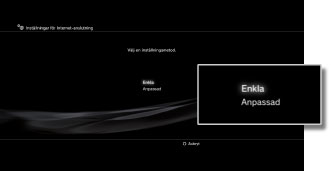
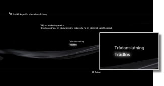
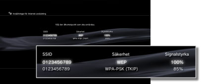
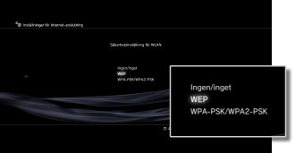
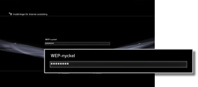

Inställningar för Internet-anslutning (Trådlös anslutning)
Den här inställningen är bara tillgänglig på PS3™-system med trådlös LAN-funktion.
Ange metod för att ansluta till Internet. Inställningar för Internetanslutning varierar beroende på nätverksmiljön och vilka enheter som används. Nedan beskrivs en typisk installationsprocedur när man ansluter trådlöst till Internet.
1. |
Kontrollera att inställningarna för åtkomstpunkten har slutförts.
Kontrollera att det finns en åtkomstpunkt som är ansluten till ett nätverk med Internet-tjänst i närheten av systemet. Inställningarna för åtkomstpunkten brukar anges via en dator. Om du behöver ytterligare information kontaktar du personen som installerar eller upprätthåller åtkomstpunkten.
|
2. |
Bekräfta att Ethernetkabeln inte är ansluten till PS3™-systemet
|
3. |
Välj  (Inställningar) > (Inställningar) >  (Nätverksinställningar). (Nätverksinställningar).
|
4. |
Välj [Inställningar för Internet-anslutning].
Välj [Ja] när en bildskärm anger att du kommer att kopplas bort från Internet.
|
5. |
Välj [Enkla].

|
6. |
Välj [Trådlös].

|
7. |
Välj [Sök av].
En lista med åtkomstpunkter inom PS3™-systemets räckvidd visas.
Beroende på vilken modell av PS3™-systemet du har så kan du eventuellt ha alternativet [Automatisk]. Välj [Automatisk] när du använder en åtkomstpunkt med funktioner för automatisk konfigurering. Om du följer anvisningarna på skärmen fylls de nödvändiga inställningarna i automatiskt. Information om åtkomstpunkter som har funktioner för automatisk konfigurering kan fås från din lokala återförsäljare.

|
8. |
Välj den åtkomstpunkt du ska använda.
En "SSID" är ett identifieringsnamn som tilldelas till åtkomstpunkterna. Om du inte vet vilken SSID du ska använda, eller om en SSID-kod inte visas, kontakta personen som installerar eller upprätthåller åtkomstpunkten.

|
9. |
Kontrollera åtkomstpunktens SSID.
|
10. |
Välj säkerhetsinställningar.
Säkerhetsinställningarna varierar beroende på vilken åtkomstpunkt som används. Kontakta personen som installerar eller upprätthåller åtkomstpunkten för information om vilken inställning du ska välja.

|
11. |
Ange krypteringskoden.
Krypteringskoden visas som [*]. Om du inte kan koden kontaktar du personen som installerar eller upprätthåller åtkomstpunkten.

När du har skrivit in en krypteringskod och har bekräftat nätverkets konfiguering, kommer en lista över inställningar att visas.
Beroende på nätverksmiljön som används, kan ytterligare inställningar behöva göras för PPPoE, proxyserver eller IP-adress. För mer information om dessa inställningar, gå igenom informationen du fått av din Internetleverantör eller instruktionerna som medföljer nätverksenheten.
|
12. |
Spara dina inställningar.
|
13. |
Prova anslutningen.
Om du väljer [Testa anslutning], försöker PSP®-systemet ansluta till Internet.
|
14. |
Bekräfta resultatet av anslutningstestet.
Om anslutningen fungerade visas information om nätverket.
|
Tips!
- Om anslutningen inte fungerar följer du anvisningarna på skärmen för att kontrollera inställningarna. Läs även informationen från din Internetleverantör och de anvisningar som levererades tillsammans med den nätverksenhet som används.
- Om du testar anslutningen direkt efter att [Automatiska] > [AOSS™] valts i steg 7, kan det hända att routerinställningarna inte kan slutföras och att anslutningen bryts. Vänta mellan 1-2 minuter innan anslutningen testas.